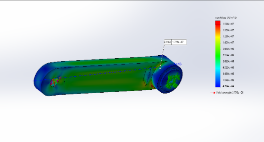
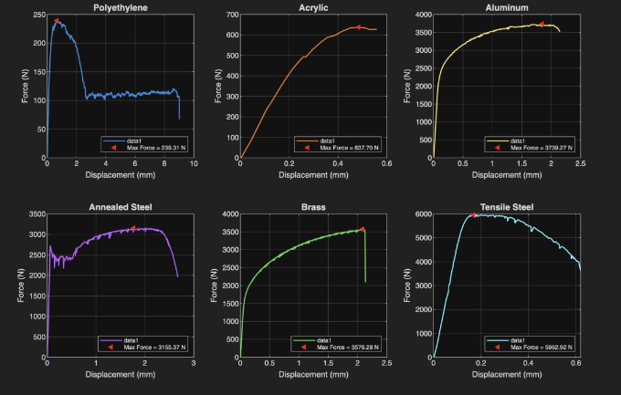

Description
This project was the static analysis and optimization of a bycycle pedal crank performed in a group of 5. The project primarily entailed the stress, strain, and material analysis of the bycycle crank. Aftewards, optimizations were found to maintain a reasonable safety factor (of 3.17) while reducing weight by 32%. SolidWorks FEA was used to provide a secondary source to said findings. To assist in this, a PASCO stress strain machine was used to test different materials for possible usage in the crank.

Image of the bycycle crank in the SolidWorks FEA simulation

Overview image of the simulator components

Image of the resulting stress-strain curves generated from the PASCO test machine